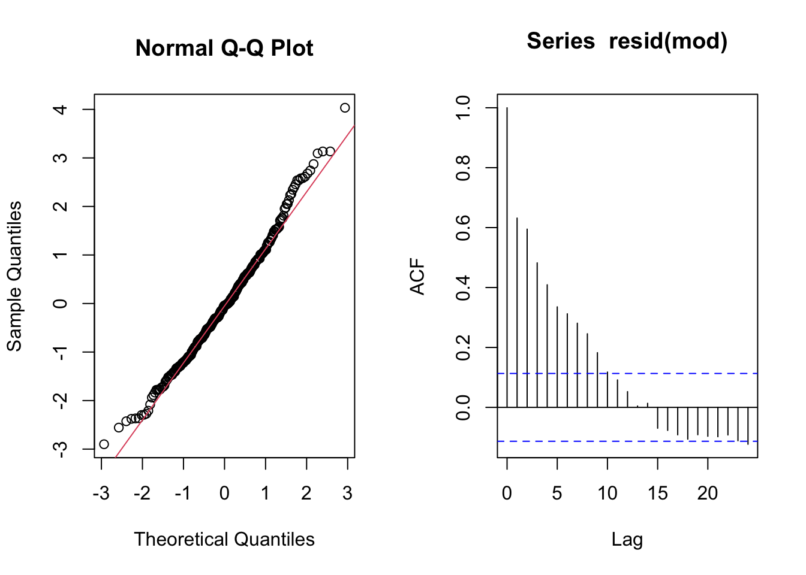
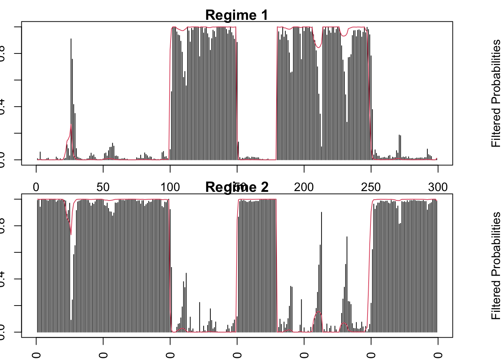
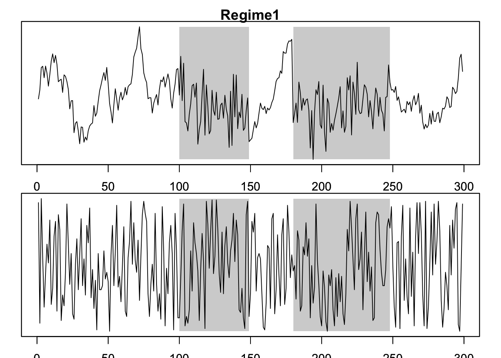

7 レジーム・スイッチング・モデル
7.1 自己回帰マルコフ・スイッチング・モデル (MSM-AR)
パッケージMSwMに含まれているサンプルデータexampleを使って,
MSM-ARモデルを適合する関数msmFit()の操作例を示す.
- 出所: Jose A. Sanchez-Espigares and Alberto Lopez-Moreno (2018). “MSwM examples.”
example: シミュレーションにより生成: \[y_{t}=\begin{cases} 8+2x_{t}+\epsilon_{t}^{(1)} & \epsilon_{t}^{(1)}\sim N(0,1),\quad t=101:150,181:250\\ 1+0.9y_{t-1}+\epsilon_{t}^{(2)} & \epsilon_{t}^{(2)}\sim N(0,0.5),\quad t=1:100,151:180,251:300 \end{cases}\] ここで, \(x_t\)は共変量.
すなわち, \(y_t\)は, 時間経過とともに, AR(1)モデルと \(x_t\) を外生変数とする単回帰モデルの間をスイッチする.

mod <- lm(y ~ x, example)
summary(mod)
##
## Call:
## lm(formula = y ~ x, data = example)
##
## Residuals:
## Min 1Q Median 3Q Max
## -2.8998 -0.8429 -0.0427 0.7420 4.0337
##
## Coefficients:
## Estimate Std. Error t value Pr(>|t|)
## (Intercept) 9.0486 0.1398 64.709 < 2e-16 ***
## x 0.8235 0.2423 3.398 0.00077 ***
## ---
## Signif. codes: 0 '***' 0.001 '**' 0.01 '*' 0.05 '.' 0.1 ' ' 1
##
## Residual standard error: 1.208 on 298 degrees of freedom
## Multiple R-squared: 0.03731, Adjusted R-squared: 0.03408
## F-statistic: 11.55 on 1 and 298 DF, p-value: 0.0007701
par(mfrow = c(1, 2))
qqnorm(resid(mod)); qqline(resid(mod), col = 2); acf(resid(mod))
par(mfrow = c(1, 1))
plot(resid(mod), type = "l"); abline(v=c(100, 150, 180, 250), lty = "dotted", col = "red")
→ 単回帰係数は有意. が, 残差は正規分布から乖離, かつ, 有意な自己相関が持続.
MSM-ARモデルの適合
- 関数msmFit(): Fitting Markov Switching Models using the EM algorithm
- msmFit(object, k, sw, p, data, family, control)
- k: numeric, レジーム数
- sw: a logical vector, スイッチングする係数の指定
← intercept, sigmaはベクトルの両端に配置
- p: integer, AR次数 (デフォルト値=0)
- p>0のケース → the last values of sw have to contain the AR coefficients which have switching
- family: モデルのクラス (It is only required when the object is a "General linear formula")examleのケースにおいて, 正しいレジーム数 (\(k=2\)).
ここでは, 正しいモデル構造を想定 (特定) 出来たものとしてモデル推定したとする:
mod.mswm <- msmFit(mod, k = 2, p = 1, sw = c(T, T, T, T), control = list(parallel = F))
summary(mod.mswm)
## Markov Switching Model
##
## Call: msmFit(object = mod, k = 2, sw = c(T, T, T, T), p = 1, control = list(parallel = F))
##
## AIC BIC logLik
## 637.0736 693.479 -312.5368
##
## Coefficients:
##
## Regime 1
## ---------
## Estimate Std. Error t value Pr(>|t|)
## (Intercept)(S) 8.6393 0.7311 11.8169 < 2.2e-16 ***
## x(S) 1.8771 0.3108 6.0396 1.545e-09 ***
## y_1(S) -0.0569 0.0805 -0.7068 0.4797
## ---
## Signif. codes: 0 '***' 0.001 '**' 0.01 '*' 0.05 '.' 0.1 ' ' 1
##
## Residual standard error: 0.9339683
## Multiple R-squared: 0.2408
##
## Standardized Residuals:
## Min Q1 Med Q3 Max
## -2.31102193 -0.03317756 0.01034139 0.04509105 2.85245598
##
## Regime 2
## ---------
## Estimate Std. Error t value Pr(>|t|)
## (Intercept)(S) 0.8417 0.3033 2.7751 0.005518 **
## x(S) -0.0533 0.1386 -0.3846 0.700534
## y_1(S) 0.9208 0.0306 30.0915 < 2.2e-16 ***
## ---
## Signif. codes: 0 '***' 0.001 '**' 0.01 '*' 0.05 '.' 0.1 ' ' 1
##
## Residual standard error: 0.5034675
## Multiple R-squared: 0.8375
##
## Standardized Residuals:
## Min Q1 Med Q3 Max
## -1.5153666486 -0.0906543338 0.0001873641 0.1656717256 1.2020898988
##
## Transition probabilities:
## Regime 1 Regime 2
## Regime 1 0.97709116 0.01500272
## Regime 2 0.02290884 0.98499728par(mfrow = c(1, 2))
qqnorm(mod.mswm@Fit@error[, 1]); qqline(mod.mswm@Fit@error[, 1], col = 2);
qqnorm(mod.mswm@Fit@error[, 2]); qqline(mod.mswm@Fit@error[, 2],col = 2); 

→ これらの図表から次のような点が観察される:
- モデルは2つのレジームを良く検出:
- 共変量\(x\)が有意なレジーム
- 1期前ラグ変数\(y_{t-1}\)が有意なレジーム
- 状態推定確率の対角要素(同じレジームに留まる確率)は, いずれも約0.98
さらに, 適合結果から以下のようなプロットを出力することができる.
レジーム#1にある状態確率の推定値 (smoothed/ filtered probabilities):

レジーム#2にある状態確率の推定値 (平滑化 (smoothed) 確率, フィルター化 (filtered) 確率):

指定のレジームにおける, 反応変数, 説明変数, 状態確率の推定値 (平滑化確率) の同時プロット:

引数swの使い方
swは, レジームスイッチするパラメータを論理値のベクトルで指定する. 今回のケース (\(p=1\)) では, 具体的に, 順に, (切片項, 外生変数の回帰係数, AR(1)係数, 誤差項の標準偏差) に対応している.
例えば, swの2番目と4番目のパラメータが スイッチしないモデルをみてみよう.
# swの使い方の確認
mod_mswm2 <- msmFit(mod, k = 2, p = 1, sw = c(T, F, T, F), control = list(parallel = F))
summary(mod_mswm2)
## Markov Switching Model
##
## Call: msmFit(object = mod, k = 2, sw = c(T, F, T, F), p = 1, control = list(parallel = F))
##
## AIC BIC logLik
## 717.8729 764.8773 -353.9364
##
## Coefficients:
##
## Regime 1
## ---------
## Estimate Std. Error t value Pr(>|t|)
## (Intercept)(S) 0.6801 0.0450 15.1133 <2e-16 ***
## x 0.6834 0.4448 1.5364 0.1244
## y_1(S) 0.8992 0.5994 1.5002 0.1336
## ---
## Signif. codes: 0 '***' 0.001 '**' 0.01 '*' 0.05 '.' 0.1 ' ' 1
##
## Residual standard error: 0.7471898
## Multiple R-squared: 0.7873
##
## Standardized Residuals:
## Min Q1 Med Q3 Max
## -1.474238051 -0.199318297 -0.004289551 0.213164425 1.989968623
##
## Regime 2
## ---------
## Estimate Std. Error t value Pr(>|t|)
## (Intercept)(S) 9.2524 0.0659 140.4006 <2e-16 ***
## x 0.6834 0.4448 1.5364 0.1244
## y_1(S) -0.0649 0.0450 -1.4422 0.1492
## ---
## Signif. codes: 0 '***' 0.001 '**' 0.01 '*' 0.05 '.' 0.1 ' ' 1
##
## Residual standard error: 0.7471898
## Multiple R-squared: 0.04087
##
## Standardized Residuals:
## Min Q1 Med Q3 Max
## -2.49496049 -0.05348336 0.01063642 0.07316299 2.07533940
##
## Transition probabilities:
## Regime 1 Regime 2
## Regime 1 0.98701875 0.0213371
## Regime 2 0.01298125 0.9786629すなわち, 外生変数 (“x”), 誤差項の標準偏差 (“Residual standard error”) はレジーム共通の推定値 (それぞれ, 0.6834, 0.7471898) を持つことが確認される.
7.2 パッケージNHMSARの利用
- 注) 12/4/25時点では, CRANレポジトリから除かれているが, GitHubに用意されたCRANレポジトリのミラーから入手可能.
パッケージNHMSARのインストール
# devtoolsパッケージをインストールしていない場合
# install.packages("devtools")
devtools::install_github("cran/NHMSAR")
library(NHMSAR)ここでは, 英国の株価指数FTSEの月次終値データから計算される対数収益率系列を使用する.
# 株価データ
# cf. https://stackoverflow.com/questions/30281444/fitting-markov-switching-models-to-data-in-r
library(tseries)
ftse <- get.hist.quote(instrument = "^FTSE", start = "1985-01-01",
end = "2015-01-01", quote = "AdjClose", compression = "m")
# compression: "m" → 月次, "w" → 週次, "d" → "日次" (デフォルト)
# Log-returns
ftse_ret <- diff(log(ftse))
(tlen <- length(ftse_ret))
## [1] 360関数fit.MSAR()を使ってモデル適合する前に,
init.theta.MSAR()により入力データセットに前処理を施す必要がある.
init.theta.MSAR(data, T, M):
- EMアリゴリズムによるNHMSARモデルのフィッティグ前の初期化
- 非斉次 (せいじ) 性 (non-homogeneity) を, 推移確率 (transitions) and/or (観測変数が満たす) 自己回帰モデルの切片項 (emissions) に仮定
- 引数
- data: 1変量 or 多変量の (T * N.samples * d-次元) 配列 (array)
- T: タイムステップ数, N.samples: 同一定常過程からの実現パス数, d: 次元
- M: レジーム数
- order: AR次数
- label:
- "HH" for homogeneous MS AR model (デフォルト)
- "HN" for non homogeneous emissions
- "NH" for non homogeneous transitions
- "NN" for non homogeneous emissions and non homogeneous transitionsいま使用しているftse_retは1変量であるから, d=1,
また, レジーム数 M=2, ARモデルの次数p=1, label=“HH”と設定する.
data <- array(ftse_ret, c(tlen, 1, 1))
M <- 2; order <- 1
# MS-ARモデルfittingのための初期設定
theta_init <- init.theta.MSAR(data, M = M, order = order, label = "HH")fit.MSAR():
- EMアリゴリズムにより, (非)斉次MS-ARモデルを適合MS-ARモデルの適合
mod_hh <- fit.MSAR(data, theta_init, verbose = TRUE, MaxIter = 20)
## [1] iteration 1 loglik = 427.359384869746
## [1] iteration 2 loglik = 599.357434544203
## [1] iteration 3 loglik = 603.097700110407
## [1] iteration 4 loglik = 615.654861169996
## [1] iteration 5 loglik = 630.536548687041
## [1] iteration 6 loglik = 633.282737927781
## [1] iteration 7 loglik = 633.650514065381
## [1] iteration 8 loglik = 633.7070393554
## [1] iteration 9 loglik = 633.717527533701
## [1] iteration 10 loglik = 633.719761891655推定パラメータ
mod_hh$theta
## $A
## A1
## Regime1 -0.30455293
## Regime2 0.06113744
##
## $A0
## A01
## Regime1 0.013059816
## Regime2 0.001084966
##
## $sigma
##
## Regime1 0.0004807941
## Regime2 0.002995211
##
## $prior
##
## Regime1 0.9997904917
## Regime2 0.0002095083
##
## $transmat
## Regime1 Regime2
## Regime1 0.9383838 0.06161617
## Regime2 0.0388313 0.96116870
##
## attr(,"NbComp")
## [1] 1
## attr(,"NbRegimes")
## [1] 2
## attr(,"order")
## [1] 1
## attr(,"label")
## [1] "HH"
## attr(,"n_par")
## [1] 8
## attr(,"emis.linear")
## [1] FALSE
## attr(,"class")
## [1] "MSAR"–> 観察結果:
- A0 (ARモデルの定数項\(\phi_0\)). レジーム1: 0.0139, レジーム2: 0.0012
- A (AR(1)モデルの係数\(\phi_1\)): レジーム1: -0.2444, レジーム2: 0.0485
- sigma. レジーム1: 0.0008, レジーム2: 0.0036
- transmat. レジーム1 → 1の推移確率\(p_{11}=0.9077\), 1 → 2の推移確率\(p_{22}=0.9507\), etc.
MS-ARモデルのレジームのプロット

## [1] NA 1 1 1 1 1 2 2 2 2 2 2 2 2 2 2 2 2 2 2 2 2 2 2 2
## [26] 2 2 2 2 2 2 2 2 2 2 2 2 2 2 2 2 2 2 2 2 2 2 2 2 2
## [51] 2 2 2 2 2 2 2 2 2 2 2 2 2 2 2 2 2 2 2 2 2 2 2 2 2
## [76] 2 2 2 2 2 2 2 2 2 2 2 2 2 2 2 2 2 2 2 2 2 2 1 1 1
## [101] 1 1 1 1 1 1 1 1 2 2 2 2 2 2 2 2 2 2 2 1 1 1 1 1 1
## [126] 1 1 1 1 1 1 1 1 1 1 1 1 1 1 1 1 1 1 1 1 1 1 1 1 1
## [151] 1 2 2 2 2 2 2 2 2 2 2 2 2 2 2 2 2 2 2 2 2 2 2 2 2
## [176] 2 2 2 2 2 2 2 2 2 2 2 2 2 2 2 2 2 2 2 2 2 2 2 2 2
## [201] 2 2 2 2 2 2 2 2 2 2 2 2 2 2 2 2 2 2 2 2 2 2 2 1 1
## [226] 1 1 1 1 1 1 1 1 1 1 1 1 1 1 1 1 1 1 1 1 1 1 1 1 1
## [251] 1 1 1 1 1 1 1 1 1 1 1 1 1 1 1 1 1 1 1 1 1 1 2 2 2
## [276] 2 2 2 2 2 2 2 2 2 2 2 2 2 2 2 2 2 2 2 2 2 2 2 2 2
## [301] 2 2 2 2 2 2 2 2 2 2 2 2 1 1 1 1 1 1 2 2 2 2 2 2 2
## [326] 2 2 2 2 2 2 1 1 1 1 1 1 1 1 1 1 1 1 1 1 1 1 1 1 1
## [351] 1 1 1 1 1 1 1 1 1 1 1–> high vola (グレイ色の区間), low volaの2レジーム
各レジームの状態確率の推定値 (平滑化確率)
library(tidyverse)
mod_hh$smoothedprob %>% head(10)
## [,1] [,2]
## [1,] 0.99987172 0.0001282819
## [2,] 0.90334895 0.0966510491
## [3,] 0.66842528 0.3315747173
## [4,] 0.10257859 0.8974214066
## [5,] 0.09516542 0.9048345760
## [6,] 0.04786803 0.9521319652
## [7,] 0.04662355 0.9533764488
## [8,] 0.03918717 0.9608128316
## [9,] 0.02860799 0.9713920054
## [10,] 0.04237943 0.9576205714ここでは, 一番単純なケース (1変量, かつ”HH”) を扱った. より一般のケースについては, マニュアルを参照すること.
但し, 上述の通り, 本パッケージは現時点ではバージョンの更新を停止し, CRANレポジトリからは外れてしまっていることから, いずれ動作しなくなる可能性があることに注意が必要である/